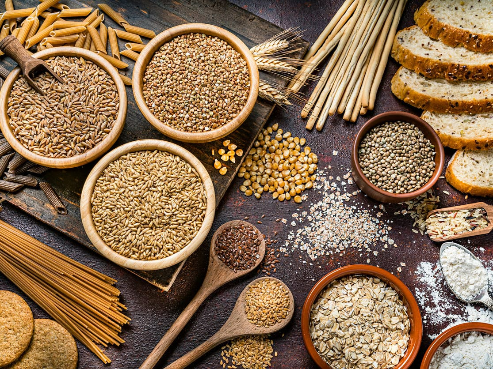

The food groups system is based on dividing foods into food groups that are similar in their components and include:
1. cereals and grain products: They are an important source of energ and fiber and include bread and pastries, wheat, corn, barley and rice

2. Vegetable group this group is a rich source of for vitamins and minerla, it is recommened to eat 3 to 5 servings a day of various vegetables
3. group include all types of fruits:as they are a rich source of vitamins and minerals, such as dates, it is recommended to eat 2 to 4 servings per day
4. Proteins are the substances that constitute the main source of protein. suchb as chicken, beef, fish, egg, beans, lentils, peas and milk